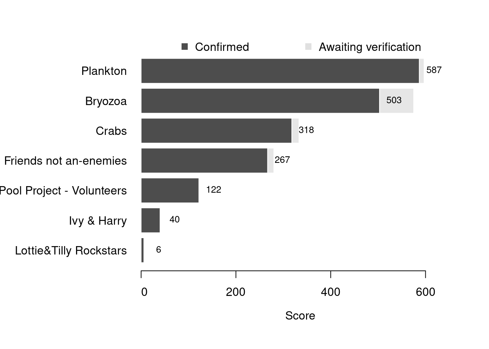

Content
You can view all the wildlife recorded at this event on iNaturalist.


| Records | 129 |
| Species | 58 |
| Verified species | 56 |
| Observers | 10 |
| Potential score | 2,069 |
| Confirmed score | 1,713 |
| Top verified species | Odostomia |
| Top species rarity score | 200 |
| Registered participants | 23 |
| Children attending | 9 |
Congratulations to Plankton for taking the gold medal in this BioBlitz Battle! And well done to everyone for a great game and some fantastic wildlife finds.
| Team | Records | Potential Score | Confirmed Score |
|---|---|---|---|
| Plankton | 26 | 597 | 587 |
| Bryozoa | 9 | 575 | 503 |
| Crabs | 44 | 333 | 318 |
| Friends not an-enemies | 31 | 280 | 267 |
| The Rock Pool Project - Volunteers | 11 | 122 | 122 |
| Ivy & Harry | 6 | 40 | 40 |
| Lottie&Tilly Rockstars | 2 | 7 | 6 |

| Participant | Records | Potential Score | Confirmed Score |
|---|---|---|---|
| Kamil Majewski | 26 | 597 | 587 |
| David Lyu | 9 | 575 | 503 |
| E.B | 28 | 344 | 318 |
| josh6565 | 18 | 216 | 216 |
| Alex McLeod | 11 | 122 | 122 |
| Theodore Lauridsen | 14 | 125 | 107 |
| Lucy Avis | 13 | 91 | 78 |
| ivyrose2211 | 6 | 40 | 40 |
| moods85 | 2 | 20 | 20 |
| seang1977 | 2 | 7 | 6 |
A total of 6 species have a verified rarity score of 72 or higher.


Community verified records only
Click any image to view the taxon on iNaturalist.
| Name | Rarity Score | |
|---|---|---|

|
Odostomia | 200 |

|
Red Conelet - Propebela rufa | 200 |

|
Odontosyllis gibba | 100 |

|
Gelidium spinosum | 81 |

|
Onoba | 75 |

|
Achelia | 72 |

|
Schizomavella linearis | 65 |

|
Plagioecia patina | 56 |

|
Amblyosyllis spectabilis | 55 |

|
Chinese hat snail - Calyptraea chinensis | 46 |

|
Fish Lice - Anilocra | 43 |

|
Gamasina | 41 |

|
Rissoa parva | 41 |

|
Oscarella | 35 |

|
White Tortoiseshell Limpet - Tectura virginea | 32 |

|
Sulphur Boring Sponge - Cliona celata | 29 |

|
Bootlace Worm - Lineus longissimus | 28 |

|
Aeolidiella alderi | 27 |

|
Harmothoe | 24 |

|
Jingle Shells - Anomiidae | 21 |

|
Red Ripple Bryozoan - Watersipora subatra | 20 |

|
Risso’s Crab - Xantho pilipes | 19 |

|
kelp lace bryozoan - Membranipora membranacea | 18 |

|
Common Tower Shell - Turritellinella tricarinata | 18 |

|
Side-gilled Seaslug - Berthella plumula | 17 |

|
Pink Coryphella - Edmundsella pedata | 17 |

|
Five-bearded Rockling - Ciliata mustela | 16 |

|
Oyster-thief - Colpomenia peregrina | 16 |

|
Hairy Sea-mat - Electra pilosa | 16 |

|
Long-clawed Porcelain Crab - Pisidia longicornis | 16 |

|
Flatworms - Platyhelminthes | 16 |

|
Ragworms and Allies - Nereididae | 15 |

|
Pullet Carpet Shell - Venerupis corrugata | 15 |

|
Dwarf Brittle Star - Amphipholis squamata | 13 |

|
Worm Pipefish - Nerophis lumbriciformis | 13 |

|
Furbelows - Saccorhiza polyschides | 13 |

|
European Painted Top Shell - Calliostoma zizyphinum | 12 |

|
Flat Periwinkle - Littorina obtusata | 12 |

|
Osmundea | 12 |

|
Thongweed - Himanthalia elongata | 11 |

|
Grey Topshell - Steromphala cineraria | 11 |

|
Grey Mail-shell - Lepidochitona cinerea | 10 |

|
Amphipods - Amphipoda | 9 |

|
Common Cockle - Cerastoderma edule | 9 |

|
Common Coralline - Corallina officinalis | 9 |

|
Velvet Swimming Crab - Necora puber | 9 |

|
Common Hermit Crab - Pagurus bernhardus | 9 |

|
Glass Shrimps - Palaemon | 9 |

|
Montagu’s Crab - Xantho hydrophilus | 9 |

|
Atlantic Beadlet Anemone - Actinia equina | 8 |

|
snakelocks anemone - Anemonia viridis | 8 |

|
bladder wrack - Fucus vesiculosus | 8 |

|
Shanny - Lipophrys pholis | 8 |

|
Common Periwinkle - Littorina littorea | 8 |

|
Patella | 7 |

|
Sea Lettuces - Ulva | 6 |